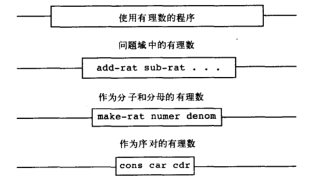

sicp 第二章学习笔记
tinyhuang
May 01, 2019
数据抽象的基本思想是将一个复合数据对象的使用，与该数据对象怎样由更基本的数据对象构造起来的细节隔离开。我在看引导的时候，其实感觉数据抽象就挺像 OO 的模式：使用的时候隐藏具体的实现细节，具体使用的时候又可以作为元素出现在程序任意位置。
数据抽象集合 – 序对
Scheme 也提供了基本的 API:
(cons a b) 将 a b 包装成一个对象
(car p) 从 cons 包装好的对象中取出第一个数据
(cdr p) 从 cons 包装好的对象中取出第二个数据
定义有理数
任何有理数都可以写成分数 (x / y) 的形式
1 | (define (make-rat n d) (cons n d)) |
然后就可以实现加减乘除这些基本运算操作了
1 | (define (add-rat x y) |
可以看到 add-rat, sub-rat 这些函数作为过程抽象，只接受我们自定义的「有理数」类型的数据就可以，我们不需要再知道有理数到底是什么，把数据交给过程 => 得到返回
抽象屏障

从图上来看，我们如果想使用 add-rat 这些基本对有理数的操作，这些操作又是基于构造函数和选择函数 make-rat, numer, denom 实现，这些函数又是基于序列实现。序列就是通过 cons, car, cdr 实现。
这样的好处其实也显而易见：
不同的层次基本无耦合，可以独立修改
修改起来产生的“副作用”更好操控
比如我们需要对操作序列的底层方法 cons, car, cbr 进行优化重构，那基于它的上层函数，操作函数这些就完成不需要重写。
Church 计数
exp2.6: 在没有数的情况下，已知可以实现 0 和加一的操作，试着去定义 one 和 two
感觉是非常有趣的一个题目。
1 | (define zero (lambda (f) (lambda (x) x))) |
已知了 zero 和 add-1 那么就按照 one == (add-1 zero) 这个思路去做
结果就是：
1 | (lambda (f) (lambda (x) (f ((zero f) x)))) |